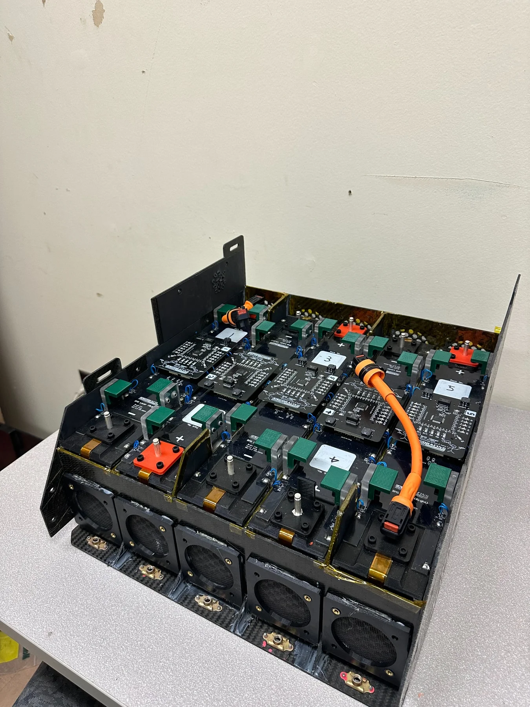
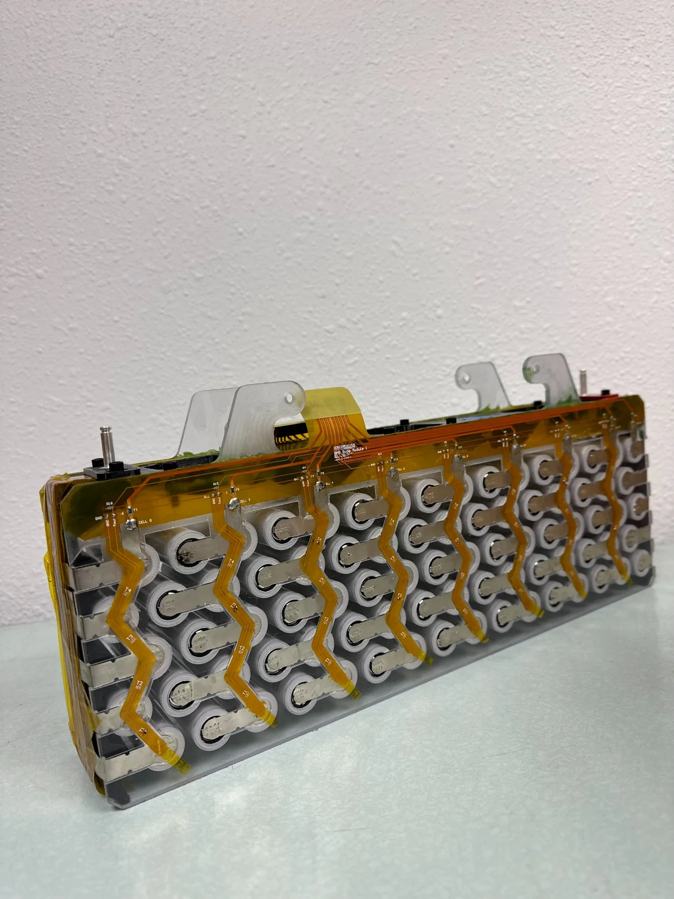

Packaging and interfaces.
Designed the battery enclosure around 480 cells, thermal-management needs, data-acquisition hardware, and high-/low-voltage separation requirements.
FORMULA SAE / BATTERY SYSTEMS / 2023–2024
Battery enclosure design, hands-on fabrication, and system integration for Cal Poly Racing's electric Formula SAE accumulator.


A Formula SAE accumulator brings mechanical packaging, electrical architecture, thermal management, and manufacturability into one tightly constrained assembly.
As Battery Systems Lead, I designed a specialized enclosure for 480 battery cells, integrating thermal management and data acquisition while accounting for required separation between high- and low-voltage electronics.
I also participated in manufacturing and assembling the accumulator, including the carbon-fiber structure, polycarbonate cell carriers, and electrical components. The work connected CAD design decisions to the practical realities of fabrication, serviceability, and assembly.
Designed the battery enclosure around 480 cells, thermal-management needs, data-acquisition hardware, and high-/low-voltage separation requirements.
Manufactured and assembled accumulator components, including the carbon-fiber structure, polycarbonate cell carriers, and electrical integration. Assisted with carbon-fiber panel layup.
Led the tractive-system Critical Design Review, explaining component layout, manufacturability, and serviceability to management and alumni reviewers.
03 / IN THE SHOP
Photographs from the team's development and assembly process, showing the battery modules, enclosure fabrication, and vehicle-level packaging.


04 / DESIGN LESSON
Working on the accumulator reinforced that engineering isn't finished once a CAD assembly fits on screen. An enclosure must support fabrication, assembly, component access, and the constraints of a real electromechanical system.
The technical details and photographs here document my student-team experience. Individual performance figures for the completed accumulator are not claimed.
See experience in my résumé